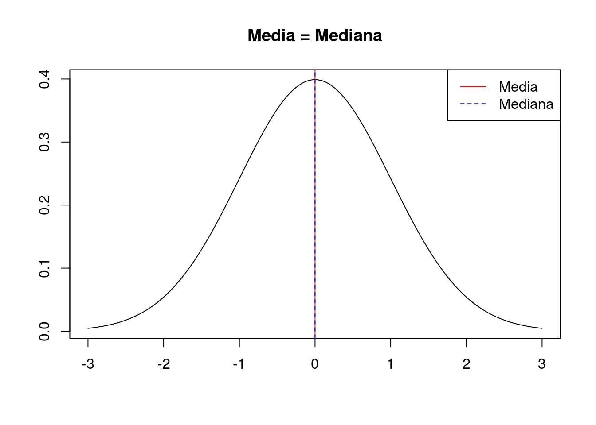

En esta sección hablaremos de las cosas de la estadística, como por ejemplo… qué es eso de \(p<.05\) y por qué a veces no tiene sentido. También, en enfoque práctico, veremos cómo realizar diferentes análisis con software gratuito que nos pueden servir en el día a día. Por supuesto, cualquier sugerencia es bienvenida.
A continuación se presentan los temas breves para entender el análisis de datos en ciencias de la salud. La primera aproximación a los datos tiene que hacerse siempre teniendo en cuenta la metodología aplicada en la recogida de datos, tanto si es un experimento, un cuasi-experimento o una observación cualquiera. A este respecto, ante la duda siempre es recomendable tener a mano al “metodólogo de cabecera”, sea un buen libro o un compañero.
Casi siempre, lo primero que hace cualquier persona que quiere entender los datos, es mirar los descriptivos. A este respecto, todos los programas, desde Excel a SAS (sí, en medio se incluye al famoso SPSS), tienen buenas funciones para hallarlos, con pequeñas discrepancias quizás en el cálculo de la moda, pero poco más. Sin embargo, en esta página usaremos R por su potencia y sencillez; tampoco es tanto la prioridad entender el código como entender el significado de los elementos que nos devuelve una tabla de descriptivos… aunque todos sabemos lo que significa una media, ¿o no?
Los descriptivos son los estadísticos que antes se ven en cualquier carrera de CC de la Salud (bueno, en cualquier carrera en general), debido a que son el principio de todo. La media, la desviación típica, la mediana, la moda… La lista puede extenderse según el autor y según lo que queramos entender por “describir” unos datos. Lo importante es saber que se pueden considerar dos grandes grupos: las medidas de tendencia central y las de variabilidad. Empezaremos por los conocidos para ver a dónde nos llevan.
El estadístico más conocido del mundo, el que aparece en las noticias, la media. El promedio aritmético de unos datos, el considerado mejor representante de un conjunto de valores:
\[\frac{1}{n}\sum_{i=1}^n x_i\]
Esta es la expresión más general, pero no la única. Tampoco nos vamos a enredar con el artificio matemático. Pero es importante entender que hay más tipos de medias: geométricas, armónicas, ponderadas… Cada una óptima para un caso. La media presentada en la fórmula anterior es la aritmética. Al dividir la suma de los valores entre la cantidad de valores, se obtiene un valor “resumen” del conjunto, pero aquí vienen las observaciones, especialmente en campos en donde se toman medidas categóricas (el típico test psicológico con una escala tipo Likert). Si tenemos valores discretos (como números enteros), ¿cómo de fiable es? Veamos ejemplos.
Si unos datos tienen valores muy bajos y muy altos, pero ninguno en el medio, la media estará en la mitad y podrá confundir: \(\frac{1+1+1+1+1+10+10+10+10+10}{10}=5.5\)
Si hay más valores muy bajos o muy altos, distorsionarán la media: \(\frac{1+2+3+4+5+6+7+8+9+50}{10}=9.5\)
Entonces no parece que siempre sea un buen descriptivo, ¿no? La media es ampliamente usada porque, en caso de poder medir a todas las personas, se consideraría el mejor representante del grupo. Sin embargo, siempre hay que tener mucho cuidado cuando la aplicamos en psicología. La media requiere que los datos sean continuos, es decir, altura, peso… aquellas cosas que al contarlas no vayan dando “saltos”. Estrictamente hablando una escala tipo Likert no sería un buen ejemplo para aplicar la media, pero el 1 - Nunca, 5 - Siempre se considera que puede tener un continuo subyacente, en este caso, la frecuencia de un acontecimiento, con lo que hablar de una media de 2.5 en una pregunta de este estilo nos indica que está en una frecuencia media.
Con estos dos asuntos (las distorsiones de la media y el tipo de dato que tenemos) se puede ver que fácilmente que en una clase en la que la mitad de los alumnos estén muy satisfechos (puntúan 5 en una escala Likert) y la otra mitad muy insatisfechos (puntúan 1 en una escala Likert), podemos concluir que la media es una satisfacción ligeramente superior a 2.5 cuando en realidad tenemos una clase dividida.
Para salvar estos problemas, se pueden usar otro tipo de medidas como la mediana, que no está influida por una puntuación extrema. Por ejemplo, el caso de los datos \([1,2,3,4,5,6,7,8,9,50]\), que tenían una media de 9.5, la mediana es 5.5, un valor que parece representar mejor a la mayoría de datos. La mediana es el valor que deja por debajo al 50% de los datos de una muestra. Con métodos informáticos es sencilla de calcular, por lo que tampoco entraremos en el artefacto matemático. Simplemente hay que ser conscientes de que en ciertas ocasiones, por ejemplo con datos extremos muy altos o muy bajos, es más representativa la mediana. En el caso de nuestra clase dividida, numéricamente la mediana y la media van a coincidir, sin embargo la media nos puede hacer pensar que no está tan mal mientras que la mediana nos informará de que la mitad de la clase no está tan satisfecha.
Otra de estas medidas que se usan para resumir datos es la moda. Se define como el valor más habitual en un conjunto de datos, pero aquí pueden surgir problemas: si hay dos valores igual de frecuentes, muchos programas optarán por dar solo uno de ellos (generalmente el más bajo o el primero que aparezca). En el caso de las escalas tipo Likert, la moda puede ser muy informativa, dado que nos dirá cuál es la respuesta elegida más veces, sabiendo en un solo dato cuál es la preferencia mayoritaria.
En la famosa distribución normal (no nos vamos a meter en estas cosas… todavía), la media, la mediana y la moda coinciden, por lo que sabiendo estos tres estadísticos podremos saber muchas cosas de cómo se organizan los datos. Solo por verlo gráficamente:

Como se ve en los gráficos, la diferencia entre la media y la mediana puede darnos pistas sobre si los valores se presentan más “pegados” a un extremo o a otro, con lo cual se intuye si las puntuaciones tienden a ser más altas o más bajas.
A continuación, hablaremos de las medidas de variabilidad, intentando ver gráficamente qué significa cada una.